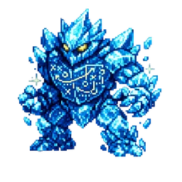
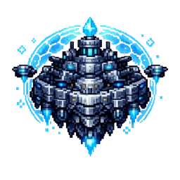
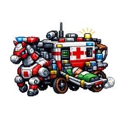
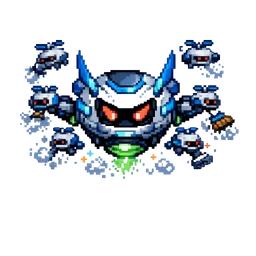

🔍 未収集モンスター — 影パターン比較
同じモンスター画像で各スタイルを確認
パターン比較（S2カードサイズ）

ライブラ
✅ 収集済み
（基準）
（基準）
？？？
A: 低透明度
（現状）
（現状）
？？？
B: 純黒
シルエット
シルエット
？？？
C: 紫ティント
シルエット
シルエット
？？？
D: 暗灰色
（輪郭薄見え）
（輪郭薄見え）
？？？
E: ぼかし
＋暗
＋暗
A 現状: opacity 0.2 のみ → 色が透けて見えてしまう
B 純黒:
C 紫ティント: 黒シルエット＋紫に染色 → ゲームっぽい神秘感
D 暗灰: シルエットが薄く輪郭だけ見える → ほんのり正体がわかる
E ぼかし: ぼんやり → 正体が全然わからない
B 純黒:
brightness(0) → くっきり影、正体不明感強いC 紫ティント: 黒シルエット＋紫に染色 → ゲームっぽい神秘感
D 暗灰: シルエットが薄く輪郭だけ見える → ほんのり正体がわかる
E ぼかし: ぼんやり → 正体が全然わからない
実際のレイアウト内での見え方（Cパターン採用案）
📚 学力系
5 / 13 体

ラーン
📚→📚
📚→💪
📚→🌿
📚→📚
ライブラ
›
📚→📚→📚

ウィズダム
📚→📚→💪

タクティクス
📚→📚→🌿
📚→💪

›
📚→💪→📚

📚→💪→💪

📚→💪→🌿

📚→🌿

クリン
›
📚→🌿→📚

📚→🌿→💪
📚→🌿→🌿